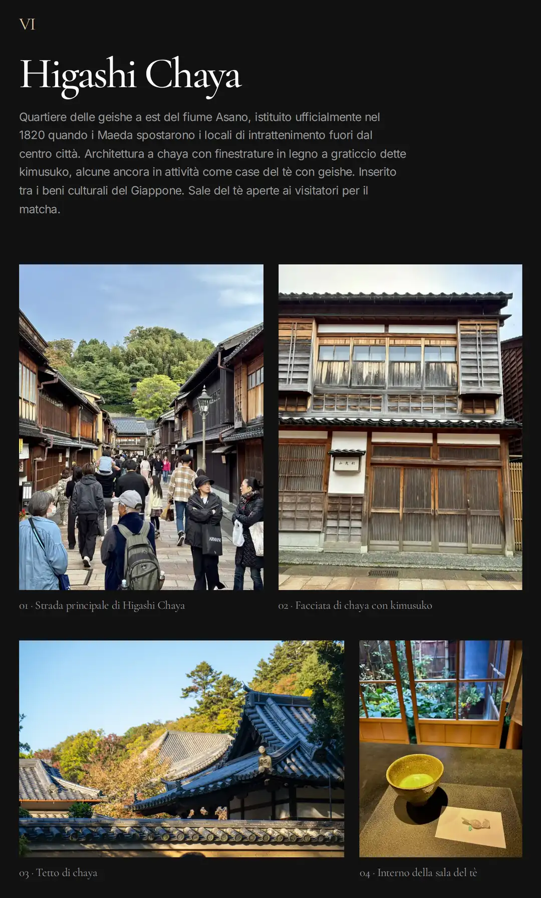
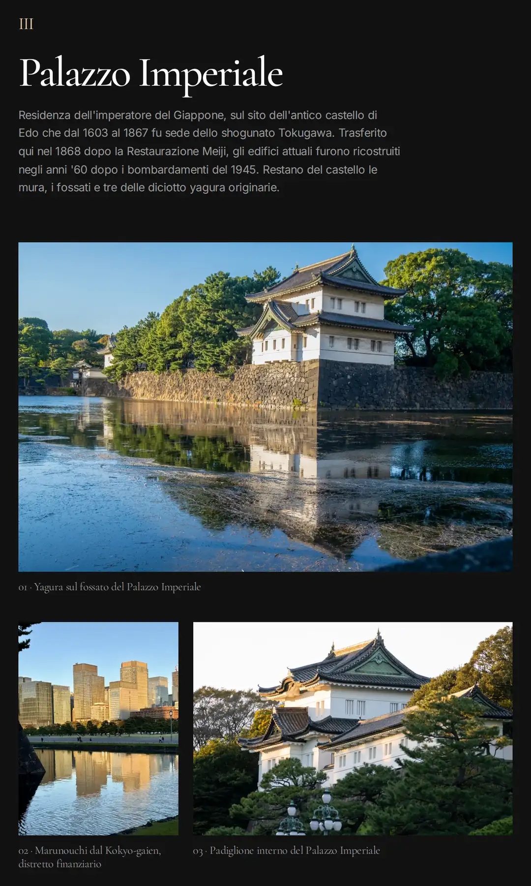
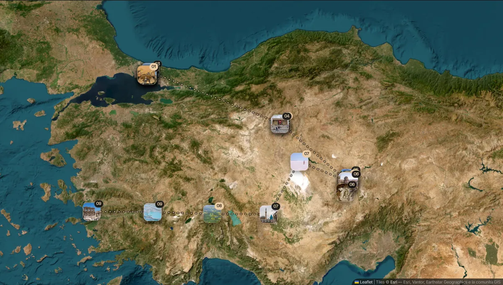

Un progetto a due persone che produce come un team, perché le regole che lo governano sono scritte, versionate e in gerarchia, invece di stare nella testa di chi le ha inventate.
01 · Contesto
Rotte e Racconti documenta viaggi reali attraverso fotografia, riprese aeree e ricostruzione storico-geografica. La divisione del lavoro è netta e dichiarata.
Il posizionamento sta in un manifesto: non vendiamo esperienze, documentiamo luoghi. Il payoff è Abitare un luogo prima di raggiungerlo. Da lì discende una lista di divieti che toglie a monte quasi tutte le leve di un progetto di viaggio: niente immagini generate, niente foto d'archivio, niente materiale di terzi, niente titoli a effetto, niente banner, e mai documentare un luogo dove non si è stati. Un progetto costruito così vive di credibilità accumulata, non di traffico comprato.
02 · Il problema
Dopo tre viaggi pubblicati il progetto aveva uno standard editoriale solido e nient'altro.
Un progetto a due persone con decisioni prese caso per caso non si rompe subito. Si degrada al terzo viaggio.
03 · Il ragionamento
Il problema di un corpus di regole non è scriverle, è sapere quale vince quando due si contraddicono. Ho definito cinque documenti con precedenze dichiarate: il manifesto prevale su tutto, standard editoriale, standard di prodotto e design system stanno alla pari su perimetri diversi, il registro delle decisioni non è normativo, gli archivi dei singoli viaggi cedono agli standard.
Tre proprietà lo rendono usabile invece che decorativo.
L'effetto che non mi aspettavo è che il corpus si autocorregge. Il file di contesto dichiara per iscritto che un divieto che conteneva era un proprio errore, e che i valori visivi che ospitava erano sbagliati. Un sistema che può ammettere i propri errori nel punto esatto in cui li ha commessi non accumula debito silenzioso.
Le due decisioni di design più istruttive sono la stessa mossa applicata a materie diverse.
L'impaginazione. Sul diario del Giappone si rompeva: foto verticali in spazi orizzontali, dislivelli di duecento pixel fra foto accostate, vuoti che si leggevano come errori. La diagnosi non era estetica. Il generatore assegnava lo spazio per posizione, la terza foto va nello spazio alto, e funzionava solo perché su Lanzarote le verticali erano il sedici per cento e capitavano sempre in fondo. Aveva preso una regolarità del materiale per una regola. Sul Giappone le verticali sono il sessantanove per cento e cadono ovunque.


Schermate del diario del Giappone pubblicato. Le fotografie sono di Emanuele: l'impaginazione e il generatore che la produce sono miei.
Ho eliminato il catalogo degli schemi e messo al suo posto una regola sola: dentro una riga le foto hanno la stessa altezza e insieme riempiono tutta la larghezza. Da lì l'impaginazione si calcola invece di essere scelta. Verificata a otto larghezze da 320 a 1920 pixel su due diari: nessun ritaglio, tutte le righe piene. Prima, una foto in tre a due perdeva l'undici per cento della larghezza per entrare in uno spazio quattro a tre.
Le tappe sulla mappa. Lo standard imponeva da otto a dodici tappe per viaggio, e quattro diari su cinque lo ignoravano già. Misurato sul pubblicato: dodici tappe su quattro giornate, quindici su cinque, trentacinque su dodici, quarantadue su undici. Un tetto fisso non distingue un viaggio di quattro giorni da uno di dodici, e applicato alla Turchia, nove giornate e 2.450 chilometri, avrebbe prodotto la mappa più spoglia del sito sull'itinerario più lungo. La regola ora scala: due o tre tappe per giornata documentata, ognuna con una foto associata e una coordinata da fonte pubblica. Se manca una delle due, la tappa non si mette.

Schermata della mappa d'insieme pubblicata. Le tile sono di Esri (Esri, Vantor, Earthstar Geographics e la comunità GIS). Le fotografie sui segnaposti sono di Emanuele: la mappa e il generatore che la compone sono miei.
Una regola che quasi nessuno rispetta non è una regola disattesa. È una regola sbagliata.
04 · La ricerca
È l'unico punto del progetto in cui una decisione di prodotto nasce da evidenza esterna invece che da giudizio interno, quindi vale la pena raccontare l'operazione intera e non solo il risultato. Studio pre-lancio disegnato, condotto e analizzato da me: ventinove persone, navigazione libera e poi un questionario di sedici domande, quattro delle quali aperte.
Navigazione libera e non per compiti, di proposito. Volevo sapere dove si perdevano da soli, non se sapessero eseguire un compito scritto da me. E il momento era il pre-lancio, perché è quando cambiare costa poco.
Le domande sono costruite per triangolare, non per confermare. La stessa possibile frattura di posizionamento è misurata tre volte con strumenti diversi. Se il sito comunicasse una cosa sola, le tre risposte convergerebbero.
Tre strumenti diversi, la stessa spaccatura: la lettura strumentale resta intorno a un terzo in entrambe le misure e in nessuna delle due una lettura prevale. Non è ambiguità casuale, il sito comunica due cose insieme. E un progetto che il lettore non sa descrivere non genera passaparola, che è l'unico canale coerente con un progetto che rifiuta l'algoritmo.
Il campione era di prossimità: persone che conoscono il progetto o chi lo fa. Una risposta cita i viaggi per nome, un'altra scherza sul licenziare il sottoscritto. Invece di ignorare il limite o di fingere di non vederlo, l'ho trasformato in una regola d'uso del dataset, scritta dentro il report prima dei risultati.
Le differenze fra sottogruppi sono state calcolate e scartate: con otto-quindici persone per cella sono rumore. Le aperte sono state codificate a mano e contate per persona su tre domande incrociate, non per menzione: contare le menzioni avrebbe fatto pesare di più chi scrive tanto. Il report dichiara anche cosa il dataset non può dire, per esempio come reagisce un lettore che non conosce il progetto, perché nel campione non ce n'era nemmeno uno.
Il risultato principale: tredici persone su ventinove segnalano attrito su navigazione, mappa o orientamento iniziale. Tutti hanno trovato i diari, ma chi ci è riuscito lo ha fatto per tentativi. Il costo è invisibile in questo dataset proprio perché il campione era motivato ad arrivare in fondo: un lettore freddo se ne va.
Da lì nasce lo standard di prodotto, che prima non esisteva, con la distinzione che lo rende applicabile. L'assenza di richiami aggressivi è registro, l'assenza di qualsiasi indicazione su cosa fare è attrito. La sobrietà è registro, elementi interattivi indistinguibili da quelli statici sono attrito. La lentezza come ritmo di lettura è registro, la lentezza come tempo perso a capire l'interfaccia è attrito.
Insieme allo standard sono usciti tredici debiti tracciati con origine dichiarata e stato verificato sul sito vivo, due decisioni strategiche tenute aperte invece che risolte a intuito, e una cosa che si dimentica sempre: una lista di cose da non toccare. Qualità fotografica, leggibilità, struttura per giornate, assenza di pubblicità, sobrietà del registro. Dopo un test la tentazione di migliorare tutto è il rischio più concreto, e le conferme vanno protette con la stessa cura delle critiche.
Cosa ha cambiato, e cosa no. Delle quattro decisioni che la ricerca ha messo sul tavolo, una si è chiusa: il progetto ha smesso di scegliere fra archivio e strumento e ha adottato il doppio strato, che la pagina del progetto adesso dichiara in chiaro. Le altre tre restano aperte e tracciate, con il criterio di chiusura scritto accanto: il meccanismo di ritorno per chi è già passato, l'intervento su homepage e mappa, e la misurazione del traffico che deve venire prima di qualsiasi redesign. Tenerle aperte è una posizione, non un rinvio: finché non esiste un dato di traffico, la frizione sulla mappa resta l'ipotesi più probabile e non un fatto, e riprogettare su un'ipotesi è esattamente l'errore che questa ricerca serviva a evitare.
Una critica che non ho trasformato in mandato: quattro persone chiedono più personalità autoriale. Su un campione amicale è rumore, e non autorizza a toccare la regola della terza persona. Ma è l'unico riscontro che attacca una decisione di sistema invece di un dettaglio, quindi l'ho registrato per quello che è: la misura del prezzo di quella scelta, non la prova che sia sbagliata.
Il report si chiude dichiarando che questo strumento ha esaurito quello che poteva dire, e con quali metodi si risponde a ciò che resta: lettori freddi con compiti reali, osservati mentre li eseguono; misurazione del traffico prima di qualsiasi ridisegno; un test mirato sul testo con richiamo a ventiquattro ore, per separare due ipotesi che il questionario non distingue, cioè se il testo sia troppo corto o se gli manchino ancore memorabili. E dichiara cosa non ripetere: scale di gradimento e indice di raccomandazione su campione amicale, perché occupano spazio e non producono segnale.
Accanto al test sui lettori c'è una pratica meno visibile e altrettanto strutturata: le domande al fotografo. Quando il confronto fra testo, foto e metadati produce un dubbio che solo chi ha viaggiato può sciogliere, il dubbio non si risolve a stima. Diventa una voce di un documento versionato, ordinata per costo del non sapere, con cosa si sa, cosa manca e cosa cambia nella pagina a seconda della risposta.
Un esempio che vale per tutti: gli orari registrati in due foto, una sul crinale e una a quaranta minuti di tornanti di distanza ventitré minuti dopo, rendono impossibile che il tramonto sia stato guardato dal faro. Finché non arriva la risposta, il testo non lo dice. È lo stesso metodo del test sui lettori applicato a una fonte diversa: raccogliere evidenza, dichiarare cosa non si sa, e non colmare il vuoto con un'assunzione.
05 · Risultato
Il materiale non era omogeneo: dal sedici al sessantanove per cento di foto verticali, da quattro a dodici giornate per viaggio. È il motivo per cui il sistema è stato messo alla prova davvero.
Il sito è stato ricostruito fuori dalla piattaforma di partenza, senza framework: un generatore statico dove il contenuto è la sola fonte di verità. Un file di testo per viaggio contiene i fatti, il codice contiene le regole, e la distinzione è deliberata: una regola dentro il contenuto andrebbe riscritta a ogni viaggio, un fatto dentro il codice si dimenticherebbe. La pagina non si tocca mai a mano: si modifica la sorgente e si rigenera.
Il difetto che ha reso necessaria la ricostruzione è misurato, non temuto: due didascalie della Scozia erano rimaste dentro giornate giapponesi, per un componente riusato senza sostituire il contenuto.
Accessibilità verificata sul pubblicato: contrasti da 5,9 a 18,7 a uno, focus visibile su ogni elemento interattivo, nessuna azione primaria affidata al passaggio del mouse, comportamento controllato con le animazioni ridotte.
06 · Cosa resta aperto
In questa lista c'era un quinto punto: l'attribuzione delle tile delle mappe, debito legale e non estetico. Verificata attiva sul sito attuale il 25 settembre 2026 e chiusa. Resta sul vecchio sito costruito su Framer, ancora online: è la ragione per cui quel sito si chiude adesso e non quando capita.
Principio emerso
Un catalogo di casi e un numero magico sono la stessa cosa: una regola che non c'è ancora. Il lavoro è trovare quella che li genera.
Da Rotte e Racconti · Sistema editoriale
Continua a leggere
Oppure scrivimi direttamente:
rispondo davvero.